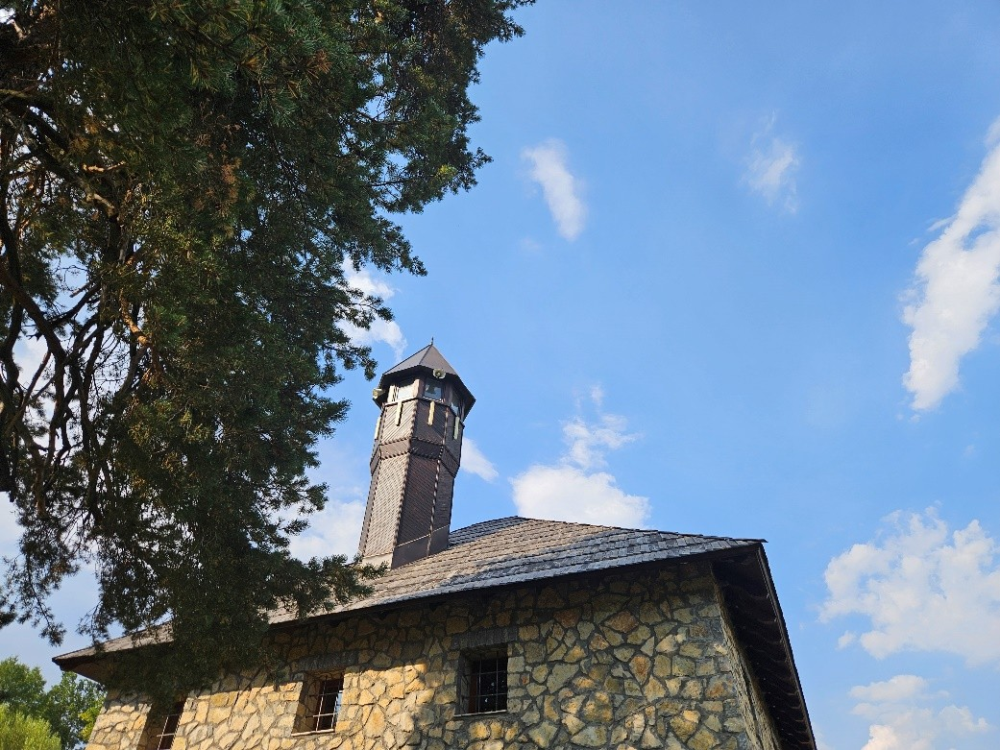
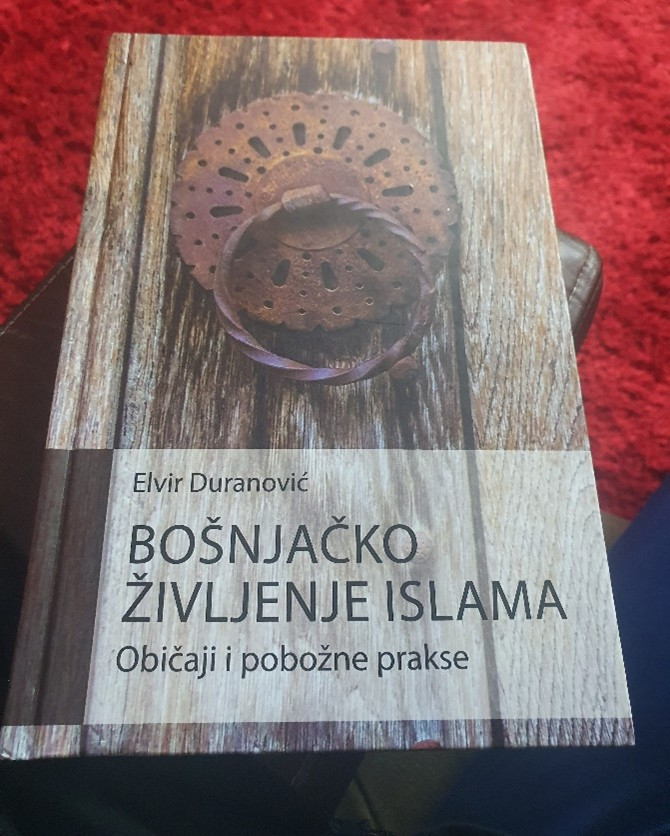

1. Religija kao važan segment bošnjačkog naroda
Vjera, džamije i zajednica kao temelj identiteta.
Religija kao važan segment bošnjačkog naroda
Tretirajući značaj projekta I njegovih ciljeva ova tema se smatra jako važnom za obradu. Religija je od suštinskog značaja za identitet Bošnjaka, kako na individualnom, tako i na kolektivnom nivou. Islam, kao vjera koju većina Bošnjaka praktikuje, duboko je ukorijenjen u njihovoj tradiciji, kulturi i svakodnevnom životu.
Kroz istoriju, religija je bila ključna u očuvanju identiteta Bošnjaka, naročito u periodima političkih i društvenih izazova, kada su vjerske institucije bile jedan od najvažnijih stubova njihove zajednice. Islam među Bošnjacima nije samo religija, već i način života koji oblikuje njihove moralne vrijednosti, etičke norme i svakodnevne prakse. Vjera podstiče na poštovanje porodice, uzajamnu pomoć i solidarnost, te duboko ukorenjene principe ljubavi, tolerancije i međusobnog uvažavanja. Ove vrijednosti se prenose sa generacije na generaciju, kako kroz direktno učenje i obrede, tako i kroz svakodnevnu interakciju unutar zajednice.
Takođe, džamije, mesdžidi i drugi vjerski objekti imaju posebnu ulogu u životu Bošnjaka. Oni nisu samo mjesta za molitvu, već i centri društvenog života, obrazovanja i okupljanja. Religijski praznici poput Bajrama, te aktivnosti kao što su predavanja, iftari i humanitarne akcije, pružaju priliku za dodatno povezivanje članova zajednice i jačanje međusobnih odnosa. Pored toga, religija ima važnu ulogu u očuvanju kulturnog naslijeđa Bošnjaka, jer mnoge tradicionalne manifestacije, običaji i kulturne prakse imaju vjersku osnovu. Islam je tako oblikovao jezik, umjetnost, književnost, muziku i mnoge druge aspekte bošnjačke kulture.
2. Akademski slikar Selver Kardović promoter bošnjačke kulture i umjetnosti na platnu
Savremeni izraz i tradicijski motivi na platnu.
Akademski slikar Selver Kardović
Kardović Selver je rodjen 1990. godine u Rožajama. Srednju likovnu školu „Petar Lubarda završio je na Cetinju. Diplomirao je na Odsjeku slikarstvo,Fakulteta likovnih umjetnosti na Internacionalnom univerzitetu u Novom Pazaru, u klasi profesora Mehmeda Slezovića. Kadrović slika figure ili djelove ljudske figure u prostoru, ali i apstraktne forme i oblike. Portrete i figure slika slobodnim potezima sa detaljima tradicije I kulturnog nasljeđa. Kardović je imao deset samostalnih izložbi u Crnoj Gori, Kosovu i Makedoniji.
Izlagao na preko 50 kolektivnih izložbi u Crnoj Gori, Bosni i Hercegovinii Turskoj.
Učesnik je brojnih likovnih kolonija i ART simpozijuma u zemlji i inostranstvu. Živi i radi u Rožajama.
3. Istaknuti suveniri bošnjačkog naroda
Ćilimi, vez, bakar, drvorez — simboli naslijeđa.
Istaknuti suveniri bošnjačkog naroda
Bošnjačka kulturna baština je bogata i raznolika, a suveniri su važan način na koji se ta baština prenosi na buduće generacije, kao i način na koji posjetitelji mogu nositi dio bošnjačke tradicije sa sobom. Suveniri bošnjačkog naroda obuhvataju širok spektar rukotvorina i predmeta, od kojih svaki ima svoj specifičan značaj i povezan je sa tradicijom, običajima i načinom života. Neki od najistaknutijih suvenira bošnjačkog naroda uključuju: Ćilimi i tepihe, Šamije i marame, Sefardi (džezve) i turska kafa, Džamijski elementi – rukotvorine od drveta i metala, Zlatarska i srebrna umjetnost, tradicionalne nošnje, ručni radovi i keramika, književna djela i kaligrafija itd…
4. Bošnjačka biblioteka
Fond, arhiva i kulturne aktivnosti.
Bošnjačka biblioteka
Bošnjačka biblioteka u Rožajama je važna institucija koja čuva kulturnu baštinu, literaturu i tradiciju bošnjačkog naroda u ovom dijelu Crne Gore. Smještena u Rožajama, gdje Bošnjaci čine većinu stanovništva, biblioteka ima ključnu ulogu u očuvanju identiteta, jezika, kulture i vjerskih vrijednosti bošnjačkog naroda. Ova biblioteka nije samo mjesto na kojem se čuvaju knjige i drugi pisani materijali, već i centar kulturnih aktivnosti i obrazovanja. Kroz različite programe, predavanja, promocije knjiga, i druge događaje, biblioteka postaje važan centar za obrazovanje i kulturno povezivanje zajednice.
5. Doprinos biblioteke ka očuva nju bošnjačke tradicije
Radionice, promocije, projekti očuvanja jezika i kulture.
Doprinos biblioteke ka očuvanju bošnjačke tradicije
Bošnjačka biblioteka u Rožajama ne samo da čuva književnu baštinu, već je i mjesto na kojem se održavaju manifestacije posvećene bošnjačkoj tradiciji, vjeri i običajima. To je važan faktor u jačanju identiteta bošnjačkog naroda, posebno u savremenim vremenima, kada su izazovi globalizacije i homogenizacije društava sve prisutniji. Biblioteka takođe ima ulogu u promovisanju međusobnog razumijevanja među različitim narodima i vjerama, jer kultura i literatura uvijek služe kao most za dijalog. Za mlade generacije, Bošnjačka biblioteka nudi mogućnosti za obrazovanje, usmjeravanje ka kulturnim i naučnim istraživanjima, te razvoj kritičkog mišljenja. Mnogi mladi ljudi u Rožajama koriste biblioteku kao prostor za učenje, istraživanje i kreativni rad, što doprinosi daljoj afirmaciji obrazovanja i kulture među mladima.
Bošnjačka biblioteka u Rožajama stoga ima višestruki značaj: čuva, njeguje i promoviše bošnjačku književnost i kulturu, postajući nezaobilazni centar za sve one koji žele saznati više o bogatoj baštini ovog naroda, te učestvovati u očuvanju kulturnog identiteta.
6. Važnost bošnjačke litaretaure i književnosti
Pisana riječ kao čuvar identiteta i pamćenja.
Važnost bošnjačke literature i književnosti
Bošnjačka literatura ima bogatu i raznoliku tradiciju koja se razvijala kroz istoriju, oblikovana kulturnim, društvenim i vjerskim okolnostima Bošnjaka, naročito kroz njihove odnose sa susjednim narodima, kao i s islamom i osmanskom vladavinom. Kroz različite epohe, bošnjačka književnost se oblikovala i kroz pisanje na arapskom jeziku, i na turskom, pa sve do savremenog pisanja na bosanskom jeziku. Ova literatura ima i poseban značaj za očuvanje identiteta, kulture i tradicije ovog naroda. Bošnjačka literatura i književnost imaju izuzetno važnu ulogu u očuvanju i afirmaciji kulturnog identiteta bošnjačkog naroda, kao i u oblikovanju njegove društvene i istorijske svijesti. Kroz književnost, Bošnjaci su tokom istorije prenosili svoje vrednosti, tradicije, religijske poglede, ali i suočavali se sa izazovima, traumama i društvenim promenama. Ova književnost je ključni element za razumevanje bošnjačkog naroda, njegovih vrednosti i kulture, ali i za stvaranje mostova razumijevanja među narodima na Balkanu i šire.
Bošnjačka književnost je neizostavan segment kulturnog identiteta Bošnjaka. Kroz pjesme, priče, eseje i romane, autori su prenosili običaje, vjerovanja, tradicije, te jezik i istoriju bošnjačkog naroda. Često je književnost bila sredstvo očuvanja specifičnosti naroda u uslovima političkih promjena, rata i društvenih turbulencija. Ona je omogućila da narod preživi i očuva svoje kolektivno pamćenje kroz literarne forme, te da se poveže sa svojom prošlošću i istorijskim nasljeđem.
7. Uticaj tradicije na život Bošnjaka
Običaji, porodične vrijednosti i društveni obrasci.
Uticaj tradicije na život Bošnjaka
Uticaj tradicije na savremeni život Bošnjaka u Crnoj Gori ima značajnu ulogu u oblikovanju identiteta, kulture i svakodnevnog života ovog naroda. Tradicija, koja uključuje običaje, vjerovanja, jezike, umjetnost i društvene norme, ostaje snažno prisutna uprkos savremenim izazovima i globalizaciji. U Crnoj Gori, Bošnjaci su najbrojniji u opštinama na sjeveru, ali i u drugim djelovima zemlje, i suočavaju se sa procesima modernizacije koji utiču na očuvanje njihovih kulturnih vrijednosti.
Nema sumnje da je ovo ključna tema koja u savremeno dobra utiče I pojašnjava život ovog naroda korz uticaj savremnih trendova današnjice. U tekstu ispod ističemo nekoliko ključnih aspekata uticaja tradicije na savremeni život Bošnjaka u Crnoj Gori:
Islam je značajan dio bošnjačkog identiteta, a vjerovanje i religiozne prakse imaju veliki uticaj na svakodnevni život. Tradicionalni vjerski običaji, kao što su post, molitve, islamski praznici (Ramazan, Bajram) i vjerski obredi (npr. svadbeni obredi, rođenje, smrt), ostaju duboko ukorijenjeni u zajednici. Iako se pojavljuju novi trendovi i manja religioznost među mladima, vjerski običaji i dalje predstavljaju stub zajednice.
Porodica je u bošnjačkoj tradiciji veoma važna, a poštovanje starijih, solidarnost i međusobna pomoć među članovima porodice ostaju ključne vrednosti. Ove vrijednosti se prenose sa generacije na generaciju i često čine osnovu međuljudskih odnosa u zajednici. Iako savremeni život donosi promjene, ove porodične vrednosti se i dalje održavaju, iako mladi u većim gradovima mogu biti pod uticajem modernijih životnih stilova.
Jezik je ključni element očuvanja identiteta Bošnjaka. Upotreba bosanskog jezika u svakodnevnom životu, kao i u obrazovnim institucijama, medijima i kulturi, ima važnu ulogu u očuvanju tradicije. Međutim, savremeni pritisci, poput globalizacije, mogu uticati na smanjenje upotrebe maternjeg jezika, naročito među mlađim generacijama koje mogu biti pod većim uticajem crnogorskog ili srpskog jezika. Kultura, kroz muziku, plesove, narodne pjesme i jela, takođe čini važan dio svakodnevnog života.
Tradicionalni običaji, poput svadbenih ceremonija, običaja vezanih za rođenje, braka i smrt, ostaju važan dio života Bošnjaka. Takođe, festivali koji proslavljaju narodnu muziku, plesove, umetnost i kulinarske specijalitete imaju veliki značaj. Neki od tradicionalnih festivala, poput manifestacija vezanih za islamske praznike ili kulturnih događanja u kojima se promoviše bošnjačka tradicija, i dalje se održavaju u Crnoj Gori.
Savremeni život Bošnjaka u Crnoj Gori nije bez izazova. Globalizacija, uticaj novih tehnologija i promena u društvenim normama utiču na omladinu, koja se suočava s problemima identiteta i stresa u uslovima brzih društvenih promena. Uprkos tome, mnogi Bošnjaci se trude da očuvaju ravnotežu između tradicije i savremenog života, te pokušavaju da adaptiraju svoje običaje i vrednosti u skladu s modernim društvom.
Migracije, naročito u zemljama Zapadne Evrope, dovode do promene u životnim stilovima, ali i očuvanju tradicije kroz dijasporu. Mnogi Bošnjaci koji žive u inostranstvu i dalje čuvaju običaje, jezik i religiju, a te tradicije se potom prenose na nove generacije, što takođe ima uticaj na svakodnevni život u Crnoj Gori.
8. Islamska zajednica u Crnoj Gori – vjerska instuticija Bošnjaka
Institucionalni okvir vjerskog života.
Islamska zajednica u Crnoj Gori
Organizovani život muslimana u današnjoj Crnoj Gori počeo je sa osmanskom vladavinom. U Crnoj Gori živi oko 20% stanovništva islamske vjere. Sjedište Islamske zajednice u Crnoj Gori nalazi se u Podgorici. Islamska zajednice u svome sastavu ima i medresu „Mehmed Fatih”, koja se nalazi u Tuzima, a koja ima još istureno žensko odjeljenje u Rožajama. Većinu savremenih Bošnjaka čine deklarativni muslimani, dok se islam sve više praktikuje od 1990. godine, te se izgradio veliki broj džamija, skoro u svakom mjestu gdje žive muslimani. U osmanlijskom periodu upravljanje nad vjerskim objektima i imovinom, kao i sa vjerskim službama u džamijama i medresama, vršila je upravna vlast pod vođstvom sultana koji je bio vrhovni carski i vjerski suveren. Prestankom njegove vlasti 1878. godine poslije Berlinskog kongresa, odnosno 1912/13. poslije Balkanskog rata u Crnoj Gori se uspostavlja vlast koja nije islamska. Prvi koji je došao na čelo Islamske zajednice u Crnoj Gori bio je hadži Salih-efendija Huli, iz Ulcinja, rodom iz Skadra. Njega je Kralj Nikola 1878. godine, uz saglasnost šejhul-islama iz Carigrada, postavio za muftiju muslimana u Crnoj Gori, sa sjedištem uprave u Ulcinju, davši mu ”punovažnu vlast da sudi muslimanima po šerijatu onako kako je to bilo u turski vakat”. Muftija Huli je napustio Crnu Goru 1883. godine. Drugi muftija koji dolazi na čelu Islamske zajednice u Crnoj Gori, je carigradski muderis Hadži Mustafa Hilmi-efendija, rodom iz Tikveša, Bugarska, koga je postavio Visoki Mešihat iz Carigrada. Njegovo postavljenje je uslijedilo na zahtjev Kralja Nikole 1887. godine, ali je i ovaj muftija napustio Crnu Goru, vrativši se u Carigrad. Treći po redu muftija bio je Murteza efendija Karađuzović, rođen u Baru. Na ovu dužnost je postavljen 1912. godine. Sjedište muftijstva prešlo je iz Podgorice u Stari Bar. Odlukom Kraljevine Srba, Hrvata i Slovenaca, 1922. godine, muftija Karađuzović je penzionisan, a muftijstvo je prenešeno u Beograd. Poslije Drugog svjetskog rata prvi predsjednik Islamskog Starješinstva za Crnu Goru čije je sjedište najprije bilo na Cetinju, a onda u Titogradu, bio je Husein ef. Redžepagić, imam iz Plava, u periodu od 1947. do 1959. godine. Zatim je za predsjednika Starješinstva Islamske zajednice izabran hadži Šukrija ef. Bakalović iz Ulcinja. Na ovoj dužnosti je ostao do 1975. godine kada je i umro. Prema odredbama Ustava Islamske zajednice u SFR Jugoslaviji iz 1968. godine na zasijedanju Vrhovnog Sabora Islamske zajednice u SFRJ, održanom 24. maja 1976. godine, za predsjednika Starješinstva Islamske zajednice u Socijalističkoj Republici Crnoj Gori izabran je hadži Idris ef. Demirović, dotadašnji imam i vjersko-prosvjetni referent Odbora Islamske zajednice u Starom Baru, koji je ovu dužnost obavljao do 2003. godine, kada se povukao iz službe, a za novog reisa izabran je hadži Rifat ef. Fejzić iz Rožaja. Prestankom funkcionisanja jedinstvene organizacije Islamske zajednice u SFR Jugoslaviji i pravnog dejstva njenog Ustava, raspadom dotadašnje državne zajednice, Sabor Islamske zajednice u Crnoj Gori donosi 1994. godine svoj Ustav kojim potvrđuje kontinuitet organizacije Islamske zajednice u Crnoj Gori u pravnim i organizacionim poslovima, kakav je imala i ranijim ustavima cjelovite Islamske zajednice, zadržavajući duhovno jedinstvo sa činiocima te zajednice Organi Islamske zajednice su: Medžlis Islamske zajednice (ranije Odbor islamske zajednice), Sabor islamske zajednice, Mešihat Islamske zajednice (ranije Starješinstvo). U organe Islamske zajednice Crne Gore je i reis IZ-e, prema odredbama ovog Ustava. Službenici Islamske zajednici su: muftija, glavni imam, imam, hatib, vaiz, muallim/ma i mujezin. Vakufska imovina nije vraćena ni poslije skoro 35 godina višepartijskog sistema; vjeronauka nije uvedena kao fakultativni predmet u školama, a Islamska zajednica nema stabilne izvore finansiranja iz državnog budžeta, dok je islamofobija prisutna u medijima. Džamija je muslimanska bogomolja, mjesto klanjanja, zajedničke molitve muslimana.
Najčešće je centralni dio u obliku kocke, na čijem vrhu je jedna ili više kupola, ili četvorosvodni krov. Mihrab je mjesto za imama koji predvodi namaz – molitvu, i nalazi se na zidnoj površini u pravcu Kabe u Meki. Mihrabi su dekorisani plastičnim ukrasima različitog oblika ili jednostavni bez ikakvih ukrasa i natpisa. Ukrasi u mihrabima su uvijek bojeni različitim bojama. U posljednje vrijeme neki mihrabi se oblažu keramičkim pločicama ili duborezom. Skoro sve džamije imaju mahfil - terasu na stubovima iznad prostora za namaz molitvu, sa ogradom i mjestom za mujezina. Mahfil služi kao pomoćni prostor za vrijeme molitvi petkom, tokom ramazana i bajrama, uglavnom za žene. Minber je stepenasto postolje postavljeno desno od mihraba sa kojeg se imam obraća vjernicima za vrijeme džume i bajram namaza. U monumentalnim džamijama je od kamena i bogato ukrašen, u manjim džamijama je drveni. Ćurs je postolje napravljeno od drveta, lijevo od mihraba postavljeno u uglu. Sastoji se od podijuma za sjedenje, ograde, nekoliko stepenica i postolja za knjige. Ćurs služi kao predavaonica. Tavanica kod starijih džamija uglavnom je izvedena od dasaka. Postoje i plafoni čija je tavanica ukrašena. Uglavnom se na ulaznoj strani džamije postave tri, najčešće četiri ili više stubova koji formiraju lučne otvore i tako formira trijem. Munara ili minaret je jedinstven arhitektonski element džamije. Sa proširenja, balkona, šerefe, muezin ezanom poziva vjernike na molitvu. Munare su u pravljene od tesanog kamena ili na krovu džamije od drveta. Kube ili kupola je pokrov džamije koji je pod uticajem osmanlijske arhitektonske tradicije građen u Sandžaku na rijetkim džamijama koje su pokrivane olovom (Husein pašina džamija u Pjevljima). Češće džamije su građene sa krovom na četiri vode koje su pokrivane šindrom, ćeramidom, a kasnije crijepom i limom. Harem ili džamijsku avliju imaju sve veće džamije. Haremi su najčešće bili ograđeni kamenim zidom. U haremima se nalaze šadrvani ili abdesthane sa više česama za vjersko čišćenje prije molitve - abdest. Česti su haremi služili i za groblje. Gasulhana su objekti za gasuljenje, odnosno kupanje umrlih muslimana. Manje gasulhane obično imaju sve džamije dok se u novije vrijeme grade veći objekti koji imaju i druge sadržaje kao što su hatarhane, hladnjače, parkinzi.
9. Avdo Međedović – bošnjački pjesnik
Epska usmena tradicija i guslarske pjesme.
Avdo Međedović
Avdo Međedović je rođen 1875. godine u selu Obrov kod Bijelog Polja, u Sandžaku. Najpoznatiji je bošnjački epski pjesnik i guslar. Njegova epska pjesma ‘’Ženidba Smailagić Meha’’ ima 12.311 stihova i duga je kao Iliada i Odiseja. Američki naučnik Milman Peri, istraživač i profesor sa Univerziteta Harvard iz prve polovine 20. vijeka, nazvao ga je „jugoslovenskim Homerom”. U djetinjstvu nije pohađao nikakvu školu, a nakon navršenog punoljetstva devet godina je služio u osmanskoj vojsci i za to vrijeme dobro savladao osmansko-turski jezik i u Solunu završio podoficirsku školu.
Avdo je bio musliman tihe naravi ali razvijenih vjerskih i moralnih osjećanja, što se najbolje vidi iz činjenice da je kao vojnik svega jednom bio kažnjen kada mu je jedan Anadolac opsovao din (vjeru) zbog čega ga je Avdo, ogorčen vjerskom mlitavošću anadolijskih Turaka koje je nazivao “nevjernicima” udario kundakom. Poslije povratka iz vojske životni vijek je proveo na imanju u rodnom Obrovu, radeći u porodičnoj radnji - kasapnici u Bijelom Polju. Guslarsku vještinu je učio prvo od oca Huseina, a kasnije i od drugih čuvenih guslara toga vremena: Ćor-Husa Husovića i drugih. Zahvaljujući talentu i vještini, tokom vremena je postao poznatiji guslar i narodni pjevač u kraju. Milman Peri je zabilježio tokom 1935. godine, na specijalnim aluminijumskim fonografskim pločama, 80.000 Avdovih epskih stihova.
Na osnovu tih istraživanja profesor Peri je zasnovao modernu teoriju usmene književnosti i modernu homerologiju. Nastavljač Perijevog rada na sakupljanju epskog stvaralaštva Albert Bates Lord, također profesor na Harvardu, 1950/51, zabilježio je još 18.000 Međedovićevih stihova, kompletirajući na taj način impozantnu kolekciju od oko 100.000 stihova „sandžačkog Homera” Avda Međedovića. Repertoar Avda Međedovića sadrži 58 pjesama, a najviše ih je zabilježio Perijev pomoćnik Nikola Vujinović. Ukupan broj stihova je 44902 koji su snimljeni na pločama i 33653 koji su zabilježeni diktiranjem, prema Lordovim bilješkama Bošnjački Milman Parry, profesor Harvardskog univerziteta dr Zlatan Čolaković, inače sin velikog bošnjačkog književnika Envera Čolakovića, autora poznatog romana „Legenda o Ali-paši“ transkribovao je sa zvučnih snimaka više od 80.000 stihova bošnjačke epike harvardskog Perijevog arhiva. Avdo Međedović je umro 1953. godine potpuno nepoznat i nepriznat u svom vremenu i u svom narodu. Bošnjaci su prvi put objavili njegovu “Ženidbu Smailagić Meha” 1987. godine.